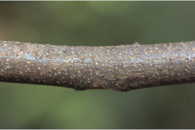
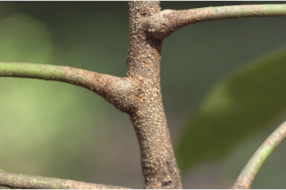
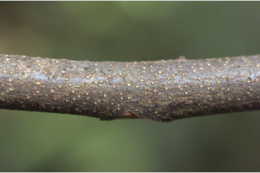
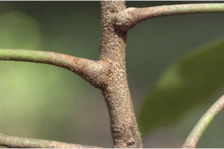

Trees up to 25 m tall.
25 ಮೀ. ಎತ್ತರದವರೆಗೆ ಬೆಳೆಯುವ ಮರಗಳು.
Trees up to 25 m tall.
மரங்கள் 25 மீ. உயரம் வரை வளரக்கூடியது.
Bark brownish, exfoliating or irregularly large flaky, lenticellate; blaze reddish brown.
ತೊಗಟೆ ಕಂದು ಬಣ್ಣ ಹೊಂದಿದ್ದು,ಪದರ ಕಳಚುವ ಅಥವಾ ಅವ್ಯವಸ್ಥಿತವಾದ ದೊಡ್ಡ ಚಕ್ಕೆ ರೂಪದಲ್ಲಿರುತ್ತದೆ,ಸೂಕ್ಷ್ಮ ವಾಯುವಿನಿಮಯ ಬೆಂಡು ರಂಧ್ರಗಳನ್ನು ಹೊಂದಿರುತ್ತದೆ; ಕಚ್ಚು ಮಾಡಿದ ಜಾಗ ಕೆಂಪುಮಿಶ್ರಿತ ಕಂದು.
Bark brownish, exfoliating or irregularly large flaky, lenticellate; blaze reddish brown.
மரத்தின் பட்டை ப்ரவுன் நிறமானது, உரியக்கூடியவை அல்லது ஒழுங்கற்ற பெரிய செதில்களாக உதிருபவை, பட்டைத்துளைகள் (லெண்டிசெல்லேட்) உடையது; உள்பட்டை சிவப்பு-ப்ரவுன் நிறமானது.
Young branchlets terete, lenticellate, with dense indumentum of reddish-brown lacerated scales.
ಎಳೆಯ ಕಿರುಕೊಂಬೆಗಳು ದುಂಡಾಗಿದ್ದು ಸೂಕ್ಷ್ಮ ವಾಯುವಿನಿಮಯ ಬೆಂಡು ರಂಧ್ರಗಳನ್ನು ಹೊಂದಿದ್ದು ಕೆಂಪುಮಿಶ್ರಿತ-ಕಂದು ಬಣ್ಣದ ಕೋಚ ಕೋಚವಾಗಿ ಸೀಳಿದ ಶಲ್ಕೆಗಳಿಂದ ದಟ್ಟವಾಗಿ ಆವೃತಗೊಂಡಿರುತ್ತದೆ.
Young branchlets terete, lenticellate, with dense indumentum of reddish-brown lacerated scales.
சிறியநுனிக்கிளைகள் குறுக்குவெட்டுத் தோற்றத்தில் வளையமானது, பட்டைத்துளைகள் (லெண்டிசெல்லேட்) உடையது, அடர்த்தியாக விளிம்புகளில் மெல்லிய பிளவுகளுடைய சிவப்பு-ப்ரவுன் நிறமான வட்ட வடிவ (பெல்டேட்) செதில்களுடையது மற்றும் நட்சத்திர வடிவ உரோமங்களுடையது.
Latex white from cut end of bark, not profuse.
ಕತ್ತರಿಸಿದ ತೊಗಟೆಯ ತುದಿ ವಿಪುಲವಾಗಿರದ ಬಿಳಿ ಬಣ್ಣದ ಕ್ಷೀರವನ್ನು ಒಸರುತ್ತದೆ
Latex white from cut end of bark, not profuse.
மரத்தின் பட்டை வெட்டப்படும் போது வெள்ளை நிற பால் குறைந்தளவு சுரக்கிறது.
Leaves compound, usually imparipinnate, ca. 54 cm long, alternate, spiral, pulvinate; rachis and petiolules (ca. 1 cm long) with lacerated scales; leaflets to 11-13, subopposite, 7.5-23 x 2-6 cm long, oblong-lanceolate, apex acuminate to caudate - acuminate, base asymmetric, margin entire, glabrous, scales only on midrib beneath; midrib raised above; secondary_nerves 12-18 pairs; tertiary_nerves broadly reticulate.
ಎಲೆಗಳು ಸಂಯುಕ್ತ ಮಾದರಿಯಲ್ಲಿದ್ದು ಸಾಮಾನ್ಯವಾಗಿ ಅಸಮ ಸಂಖ್ಯಾ ಗರಿ ರೂಪಿಗಳಾಗಿರುತ್ತವೆ, ಅಂದಾಜು 54 ಸೆಂ.ಮೀ. ಉದ್ದವಿದ್ದು ಪರ್ಯಾಯ ಮತ್ತು ಸುತ್ತು ಜೋಡನಾ ವ್ಯವಸ್ಥೆಯಲ್ಲಿರುತ್ತವೆ ಮತ್ತು ಉಬ್ಬಿದ ಎಲೆ ಬುಡದ ಸಮೇತವಿರುತ್ತದೆ ;ನಡುಕಾಂಡ ಮತ್ತು ಕಿರುತೊಟ್ಟುಗಳು (ಅಂದಾಜು 1 ಸೆಂ.ಮೀ. ಉದ್ದ) ಕೋಚ ಕೋಚವಾಗಿ ಸೀಳಿದ ಶಲ್ಕೆಗಳಿಂದ ಕೂಡಿರುತ್ತವೆ ;ಕಿರು ಎಲೆಗಳು 11 ರಿಂದ 13 ದ್ದು ಉಪ-ಅಭಿಮುಖಿಗಳಾಗಿದ್ದು, 7.5 - 23 X 2 -6 ಸೆಂ. ಮೀ.ವರೆಗಿನ ಗಾತ್ರ, ಚತುರಸ್ರ – ಈಟಿಯ ಆಕಾರ, ಕ್ರಮೇಣ ಚೂಪಾಗುವುದರಿಂದ ಬಾಲರೂಪಿ-ಕ್ರಮೇಣ ಚೂಪಾಗುವ ತುದಿ ,ಅಸಮ್ಮಿತಿಯಾದ ಬುಡ,ನಯವಾದ ಅಂಚು ಹೊಂದಿದ್ದು ತಳಭಾಗದಲ್ಲಿ ಮಧ್ಯನಾಳದ ಮೇಲೆ ಮಾತ್ರ ಶಲ್ಕೆಗಳಿದ್ದು ಉಳಿದಂತೆ ರೋಮರಹಿತವಾಗಿರುತ್ತವೆ; ಮಧ್ಯನಾಳ ಪತ್ರದ ಮೇಲ್ಭಾಗದಲ್ಲಿಮೇಲೆದ್ದಿರುತ್ತದೆ; ಎರಡನೇ ದರ್ಜೆಯ ನಾಳಗಳು 12 ರಿಂದ 18;ಮೂರನೇ ದರ್ಜೆಯ ನಾಳಗಳು ವಿಶಾಲ ಜಾಲಬಂಧ ನಾಳ ವಿನ್ಯಾಸದವು.
Leaves compound, usually imparipinnate, ca. 54 cm long, alternate, spiral, pulvinate; rachis and petiolules (ca. 1 cm long) with lacerated scales; leaflets to 11-13, subopposite, 7.5-23 x 2-6 cm long, oblong-lanceolate, apex acuminate to caudate - acuminate, base asymmetric, margin entire, glabrous, scales only on midrib beneath; midrib raised above; secondary_nerves 12-18 pairs; tertiary_nerves broadly reticulate.
கூட்டிலை, ஒற்றைபடை சிறகு வடிவக்கூட்டிலைகள், 54 செ.மீ. நீளமானது, மாற்றுஅடுக்கமானவை, சுழல் போல் அமைந்தது, பல்வினேட்; மத்தியகாம்பு மற்றும் சிற்றிலைக்காம்பு (ca. 1 செ.மீ. நீளமானது) விளிம்புகளில் மெல்லிய பிளவுகளுடைய சிவப்பு-ப்ரவுன் நிறமான வட்ட வடிவ (பெல்டேட்) செதில்களுடையது; சிற்றிலைகள் 11-13, கிட்டத்தட்ட எதிரடுக்கமானவை , 7.5-23 X 2-6 செ.மீ. நீளமானது, நீள்சதுர-ஈட்டி வடிவானது, அலகின் நுனி அதிக்கூரியது முதல் வால்-அதிக்கூரியது, அலகின் தளம் சமமற்றது, அலகின் விளிம்பு முழுமையானது, உரோமங்களற்றது, மையநரம்பின் கீழ்பரப்பில் விளிம்புகளில் மெல்லிய பிளவுகளுடைய சிவப்பு-ப்ரவுன் நிறமான வட்ட வடிவ (பெல்டேட்) செதில்களுடையது ; மையநரம்பு மேற்புறத்தில் அலகின் பரப்பைவிட உயர்ந்து இருக்கும்; இரண்டாம் நிலை நரம்புகள் 12-18 ஜோடிகள்; மூன்றாம் நிலை நரம்புகள் அகன்ற வலைப்பின்னல் போன்றவை.
Inflorescence axillary panicles, few to densely covered reddish-brown lacerated scales; flowers polygamodioecious, subsessile, yellowish.
ಪುಷ್ಪಮಂಜರಿಗಳು ಅಕ್ಷಾಕಂಕುಳಿನಲ್ಲಿರುವ ಪುನರಾವೃತ್ತಿಯಾಗಿ ಕವಲೊಡೆಯುವ ಮಧ್ಯಾಭಿಸರ ಮಾದರಿಯಲ್ಲಿದ್ದು ಕೆಲವು ಅಥವಾ ದಟ್ಟವಾಗಿ ಆವೃತಗೊಂಡ ಕೋಚ ಕೋಚವಾಗಿ ಸೀಳಿದ ಕೆಂಪು ಮಿಶ್ರಿತ ಕಂದು ಶಲ್ಕೆಗಳ ಸಮೇತವಿರುತ್ತವೆ; ಹೂಗಳು ಸಂಕೀರ್ಣ ಲಿಂಗಿಗಳಾಗಿದ್ದು ದ್ವಿಲಿಂಗಿ, ಹೆಣ್ಣು ಮತ್ತು ದ್ವಿಲಿಂಗಿ ಹಾಗೂ ಗಂಡು ಹೂಗಳು ಬೇರೆ ಬೇರೆ ಸಸ್ಯಗಳಲ್ಲಿರುತ್ತವೆ ಮತ್ತು ಉಪ-ತೊಟ್ಟು ಸಹಿತವಾಗಿರುತ್ತವೆ,ಹೂಗಳ ಬಣ್ಣ ಹಳದಿ; ಹೂಗಳು ಹಸಿರು ಮಿಶ್ರಿತ ಹಳದಿ ಬಣ್ಣ ಹೊಂದಿರುತ್ತವೆ.
Inflorescence axillary panicles, few to densely covered reddish-brown lacerated scales; flowers polygamodioecious, subsessile, yellowish.
மஞ்சரி தண்டின் இலைக்கோணங்களில் காணப்படும் பேனிக்கிள், குறைந்தளவு முதல் அடர்த்தியாக சிவப்பு-ப்ரவுன் நிறமான வட்ட வடிவ (பெல்டேட்) செதில்களுடையது; மலர்கள் பாலிகேமோ-டையிசியஸ், மிகச்சிறிய காம்புடையது, மஞ்சள் நிறமானவை.
Berry, ellipsoid, to 3 cm long, densely covered with reddish-brown lacerated scales; seed one.
ಬೆರ್ರಿಗಳು ಅಂಡವೃತ್ತದ ಆಕಾರದಲ್ಲಿದ್ದು 3 ಸೆಂ.ಮೀ ವರೆಗಿನ ಉದ್ದವಿರುತ್ತವೆ ಮತ್ತು ಕೋಚ ಕೋಚವಾಗಿ ಸೀಳಿದ ಕೆಂಪು ಮಿಶ್ರಿತ ಕಂದು ಬಣ್ಣದ ಶಲ್ಕೆಗಳಿಂದ ದಟ್ಟವಾಗಿ ಆವೃತಗೊಂಡಿರುತ್ತವೆ; ಬೀಜಗಳು 1.
Berry, ellipsoid, to 3 cm long, densely covered with reddish-brown lacerated scales; seed one.
முழுச்சதைகனி (பெர்ரி), நீள்வட்ட வடிவானது, முதல் 3 செ.மீ. நீளமானது, அடர்த்தியாக சிவப்பு-ப்ரவுன் நிறமானது வட்ட வடிவ (பெல்டேட்) செதில்களுடையது; ஒரு விதையுள்ள கனி.

 


